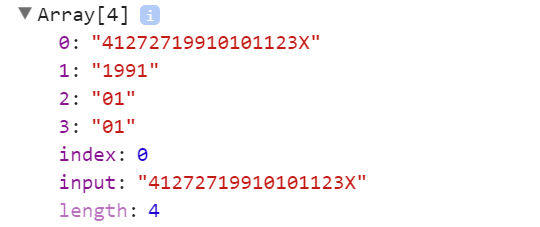

js-ES5&ES6新特性
作者： 千锋李文浩
时间： 17/02/02
正则查找
str.search(正则表达式)
search 使用正则查找
var pattern = /good/ig;
var str = 'good good study!，day day up!'; alert(str.search(pattern)); //找到返回下标，否则返回-1
indexOf不可以使用正则
正则提取
var reg = /(需要提取的内容)/; 将需要提取的内容使用括号括起来
reg.exec(字符串); 根据正则提取字符串中的内容
exec() 方法用于检索字符串中的正则表达式的匹配。
返回一个数组，其中存放匹配的结果。如果未找到匹配，则返回值为 null。
返回值解析：
var reg = /^\d{6}(\d{4})(\d{2})(\d{2})\d{3}[\dX]$/;

数组下标：
0： 正则匹配的内容
1：第一个括号的内容
2：第二个括号的内容
index: 正则匹配成功时第一个字符的下标
input:用户输入的内容
str.match(reg)
正则高级（扩展）
[^abc] 查找不在方括号中的字符
[^\d] 匹配不是数字的字符（当前字符不是数字）
实战
1、提取姓名
2、提取手机号
3、提取身份证中的年月日
4、使用正则提取出phone或者username或者address的值
var str = 'username=pine; phone=18270837879; address=henan';

严格模式
详细讲解请参考 第6天(06-ES5...)中的严格模式
1、什么是严格模式？
使用严格的规则解析js代码
2、如何开启严格模式？
1、在全局开启严格模式
<script>
'use strict'; // 必须写在第一行 开启严格模式
</script>
2、在函数中使用严格模式
function fn1(){
'use strict'; //在fn1中使用严格模式
}
function fn2(){
//fn2中没有使用严格模式
}
2、严格模式做了哪些限制？
1、变量必须使用var定义 （很有帮助，强制规范代码）
2、禁止this关键字指向全局对象（window）
3、禁止删除变量

作用域 & 作用域链（回顾）重
1、什么是作用域？
变量或者函数的可访问范围
作用域是一个对象，存放当前区块里面的变量和函数
作用域有两种：
全局作用域（window对象）
局部作用域（函数内部）
2、什么是作用域链？（面试必问）
1、简单说就是作用域集合
2、当前作用域 -> 父级作用域 -> ... -> 全局作用域 形成的作用域链条

休息时刻

神奇的块级作用域（重）
1、什么是块级作用域？
任何使用 {} 括起来的区域 称之为块级作用域
比如：
if(){ }
for(){ }
switch(){}
...
详情请点击：http://blog.csdn.net/huangjq36sysu/article/details/51085674 （说明：变量提升总结有错误，请忽略）
2、块级作用域的特点
在块级作用中 使用let 定义的变量或者函数 在 {}外部 不可访问
demo:
if(true){
let a = 10;
}
console.log(a); //ReferenceError: a is not defined
let & const（重）
1、let用于声明块级变量
if(false){
let a = 10; //只能在当前的代码块{}中使用
}
console.log(a);//报错
for(let i=0; i<4; i++){
}
console.log(i); //报错
注意：
1、同一个{}中不能使用let重复定义一个变量
demo：
let a = 10;
let a = 5; //报错
2、let不会进行变量提升
2、const用于声明常量（不可改变的变量）
const PI = 3.14;
PI = 3.1415926; //报错(Assignment to constant variable.)
实战
1、给ul中所有的li绑定点击事件，点击时弹出自己的下标
2、百度首页选项卡
字符串API扩展
1、字符串太长需要换行怎么办？
常规解决方案：
var a = '<div>'+
'<span>'+num+'</span>'+
'div>';
ES6神器：var b = `
<div>
<span></span>
</div>
`;
2、字符串拼接太麻烦怎么办？
ES6神器（字符串模板）：
var phone = 18200000000;
var intro = `my name is pine, my phone is ${phone}`; //注意是数字1前面的`哦，不是'
console.log(intro); //${phone}被替换成18200000000
3、includes 字符串搜索
之前使用indexOf进行查找，利用的是indexOf方法的特性，找打了返回下标，找不到返回-1，所以每次你需要这么写：
var str = 'abcd';
if( str.indexOf('c') > -1 ){} //需要判断是否>-1
ES6神器：includes方法
str.includes(查找的内容); 找到返回true，找不到返回false
demo:
var str = 'good method!';
str.includes('method'); //true
4、判断首尾 startsWith endsWith
startsWith用于判断是否位于头部，endsWith判断是否位于尾部，可以说这两个方法是includes方法的扩展；
demo:
let str = 'how are you?';
str.startsWith('how');//true
str.endsWith('?');//true
5、repeat 字符串重复（懒人福利）
str.repeat(n); 将字符串重复n次（n是整数）
demo:
let str = 'money';
str.repeat(2); // 'moneymoney'
6、padStart,padEnd 缺啥补啥
对象（非常重）
1、什么是对象
万物皆对象
一间教室 一个人 一棵树 。。。
一个人：
对象的属性（静态描述）
名字：pine
肤色： 黑色 、 黄色 白色
头发：短发 长发 光头
身高：175 165
体重：180 120 150
对象的方法（function） （也是属性）
睡觉
吃饭
打痘痘
动作 => 功能 => function(){}
2、js怎么定义对象？
JSON数据格式：由数组和对象组成
1、JSON格式（常用）
var person = {
name: '张三'
};
2、构造函数方式（基本不用）
var dog = new Object();
dog.name = '小黄毛';
3、什么是对象的属性和方法？
4、怎么访问对象的属性和方法？
1、如果属性名确定的话（不是变量）
var person = {
name: 'pine'
};
person.name
person['name']
2、不知道属性名是什么（属性名是变量）
var person = {
name: 'pine',
age: 18
};
var attr = 'age';
// person.attr == person['attr'] 错误
person[attr] == person['age']
解构赋值（重）
1、什么是解构赋值？
解构赋值可将数组的元素或对象的属性赋予给另一个变量，该变量的定义语法与数组字面量或对象字面量很相似。
2、解构数组
现有数组: var arr = [13,22,34];
如果我们希望用3个变量得到数组中对应的值，我们会这么写：
var first = arr[0],
second = arr[1],
third = arr[2];
解构赋值：
var [first,second,third] = arr; //first=13 second = 22 third = 34
实际场景剖析：
<input type="text" class="username">
<input type="text" class="phone">
如果我们想用变量得到username和phone
我们可以这么写：
<script>
var [uname,phone] = document.querySelectorAll('input');
</script>
3、解构对象（先了解）
var classRoom = {
id: '1609',
personNum: 34
};
var {id,personNum} = classRoom; // id=1609 personNum=34
=>函数
1、什么是箭头函数？
用箭头定义的函数，类似于匿名函数
写法简单
2、简单箭头函数（代码块中只有一行代码）
var fn = function(a){
return a*a;
}
箭头函数：
var fn = (a) => a*a;
3、多个参数箭头函数
var add = function(a,b){
return a+b;
}
箭头函数：
var fn = (a,b) => a+b;
4、代码块中有多行代码
var getSum = function(arr){
var sum = 0;
for(var i=0,len=arr.length; i<len; i++){
sum += arr[i];
}
return sum;
}
箭头函数：
var fn = (arr) => {
var sum = 0;
for(var i=0,len=arr.length; i<len; i++){
sum += arr[i];
}
return sum;
}
this(重)
this的存在场景
1、全局范围内this 不在函数中指的就是window对象
2、function中的this
1、普通函数调用 (开启严格模式 是 undefined，否则是window)
2、对象的
3、事件的
谁调用，this就指向谁
div.onclick = function(){
console.log(this); // div 因为是div调用了onclick方法
}
var person = {
name: 'pine',
eat: function(){
console.log(this); //当person调用时指向person对象
}
};
person.eat(); // eat方法 暂时 只能由person调用
3、构造函数（暂时不考虑）
预习
1、运动的原理是什么（元素是怎么动起来的）？
2、定时器（复习）
3、实现小球在页面上乱撞（边界处理）